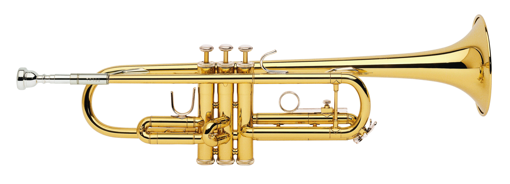

The Bb (flat) trumpet is made from tubes of brass wrapped in oblong shapes. Sound is made by blowing air through the lips and make a buzzing sound at the same time. The air travels all thorughout the trumpet and comes out the bell of the instrument. When the valves are pressed, it reroutes the air into different length tubes. This changes the distance the air has to travel, thus affecting the pitch that is produced. Tuning can also be done by either pulling out or pushing in the tuning slide to make the pitch lower or higher respectively.
